玻璃运...以月计算
公历起卦时间：2021年1月14日
干支：庚子年 己丑月 壬戌日 （日空：子丑）
巽宫：风天小畜 巽宫：巽为风 (六冲)
六神 伏神 本 卦 变 卦
白虎 兄弟辛卯木 ▅▅▅▅▅ 兄弟辛卯木 ▅▅▅▅▅ 世
螣蛇 子孙辛巳火 ▅▅▅▅▅ 子孙辛巳火 ▅▅▅▅▅
勾陈 妻财辛未土 ▅▅ ▅▅ 应 妻财辛未土 ▅▅ ▅▅
朱雀 官鬼辛酉金 妻财甲辰土 ▅▅▅▅▅ 官鬼辛酉金 ▅▅▅▅▅ 应
青龙 兄弟甲寅木 ▅▅▅▅▅ 父母辛亥水 ▅▅▅▅▅
玄武 父母甲子水 ▅▅▅▅▅ 世 ○→ 妻财辛丑土 ▅▅ ▅▅
月破，是否符合当前的情况？
月卦：小畜之巽，父化财子化丑。己卯月上证3月大盘。暴涨。.md
时间: 2015-02-27 22时4分
干支: 乙未年戊寅月甲戌日 (旬空: 申酉 )
风天小畜 巽为风
六神 伏神 本 卦 变 卦
玄武 ▅▅▅▅▅ 兄弟卯木 ▅▅▅▅▅ 兄弟卯木 世
白虎 ▅▅▅▅▅ 子孙巳火 ▅▅▅▅▅ 子孙巳火
腾蛇 ▅▅ ▅▅ 妻财未土 应 ▅▅ ▅▅ 妻财未土
勾陈 官鬼酉金▅▅▅▅▅ 妻财辰土 ▅▅▅▅▅ 官鬼酉金 应
朱雀 ▅▅▅▅▅ 兄弟寅木 ▅▅▅▅▅ 父母亥水
青龙 ▅▅▅▅▅ 父母子水 世Ｏ→ ▅▅ ▅▅ 妻财丑土
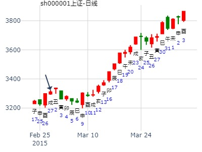
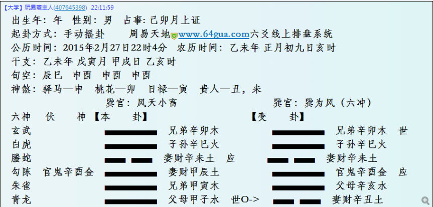
方大炭素何时上到6.50？现在6.21元星期六
出生：2021 年 性别：男 占事：没填
排卦：元亨利贞网六爻在线排盘系统 https://www.china95.net
公历起卦时间：2021年2月6日20时50分 (电脑自动)
干支：辛丑年 庚寅月 乙酉日 丙戌时 （日空：午未）
巽宫：风天小畜 巽宫：巽为风 (六冲)
六神 伏神 本 卦 变 卦
玄武 兄弟辛卯木 ▅▅▅▅▅ 兄弟辛卯木 ▅▅▅▅▅ 世
白虎 子孙辛巳火 ▅▅▅▅▅ 子孙辛巳火 ▅▅▅▅▅
螣蛇 妻财辛未土 ▅▅ ▅▅ 应 妻财辛未土 ▅▅ ▅▅
勾陈 官鬼辛酉金 妻财甲辰土 ▅▅▅▅▅ 官鬼辛酉金 ▅▅▅▅▅ 应
朱雀 兄弟甲寅木 ▅▅▅▅▅ 父母辛亥水 ▅▅▅▅▅
青龙 父母甲子水 ▅▅▅▅▅ 世 ○→ 妻财辛丑土 ▅▅ ▅▅
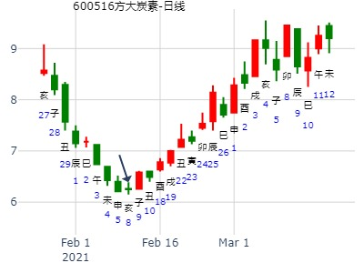
试测紫光国微辛丑年寅卯辰月哪月顶？+
出生：2021 年 性别：男 占事：没填
公历起卦时间：2021年2月18日19时24分 (电脑自动)
干支：辛丑年 庚寅月 丁酉日 庚戌时 （日空：辰巳）
神煞：驿马－亥 桃花－午 日禄－午 贵人－酉，亥
巽宫：风天小畜 巽宫：巽为风 (六冲)
六神 伏神 本 卦 变 卦
青龙 兄弟辛卯木 ▅▅▅▅▅ 兄弟辛卯木 ▅▅▅▅▅ 世
玄武 子孙辛巳火 ▅▅▅▅▅ 子孙辛巳火 ▅▅▅▅▅
白虎 妻财辛未土 ▅▅ ▅▅ 应 妻财辛未土 ▅▅ ▅▅
螣蛇 官鬼辛酉金 妻财甲辰土 ▅▅▅▅▅ 官鬼辛酉金 ▅▅▅▅▅ 应
勾陈 兄弟甲寅木 ▅▅▅▅▅ 父母辛亥水 ▅▅▅▅▅
朱雀 父母甲子水 ▅▅▅▅▅ 世 ○→ 妻财辛丑土 ▅▅ ▅▅
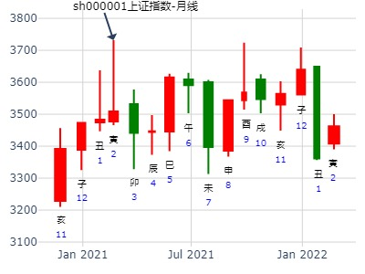
07大家一起来，九缠烂打：上证2021.2.23收盘 个位数是几？
出生：2021 年 性别：男 占事：没填
公历起卦时间：2021年2月22日19时59分 (电脑自动)
干支：辛丑年 庚寅月 辛丑日 戊戌时 （日空：辰巳）
神煞：驿马－亥 桃花－午 日禄－酉 贵人－寅，午
巽宫：风天小畜 巽宫：巽为风 (六冲)
六神 伏神 本 卦 变 卦
螣蛇 兄弟辛卯木 ▅▅▅▅▅ 兄弟辛卯木 ▅▅▅▅▅ 世
勾陈 子孙辛巳火 ▅▅▅▅▅ 子孙辛巳火 ▅▅▅▅▅
朱雀 妻财辛未土 ▅▅ ▅▅ 应 妻财辛未土 ▅▅ ▅▅
青龙 官鬼辛酉金 妻财甲辰土 ▅▅▅▅▅ 官鬼辛酉金 ▅▅▅▅▅ 应
玄武 兄弟甲寅木 ▅▅▅▅▅ 父母辛亥水 ▅▅▅▅▅
白虎 父母甲子水 ▅▅▅▅▅ 世 ○→ 妻财辛丑土 ▅▅ ▅▅
金禄电子2月。
时间: 2023-02-01
干支: 壬寅年癸丑月庚寅日 (旬空: 午未 )
风天小畜 巽为风
六神 伏神 本 卦 变 卦
腾蛇 ▅▅▅▅▅ 兄弟卯木 ▅▅▅▅▅ 兄弟卯木 世
勾陈 ▅▅▅▅▅ 子孙巳火 ▅▅▅▅▅ 子孙巳火
朱雀 ▅▅ ▅▅ 妻财未土 应 ▅▅ ▅▅ 妻财未土
青龙 官鬼酉金▅▅▅▅▅ 妻财辰土 ▅▅▅▅▅ 官鬼酉金 应
玄武 ▅▅▅▅▅ 兄弟寅木 ▅▅▅▅▅ 父母亥水
白虎 ▅▅▅▅▅ 父母子水 世Ｏ→ ▅▅ ▅▅ 妻财丑土
亨。 密云不雨，自我西郊。
初九：复自道，何其咎，吉。
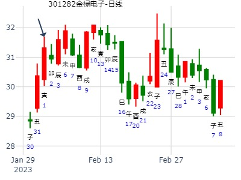
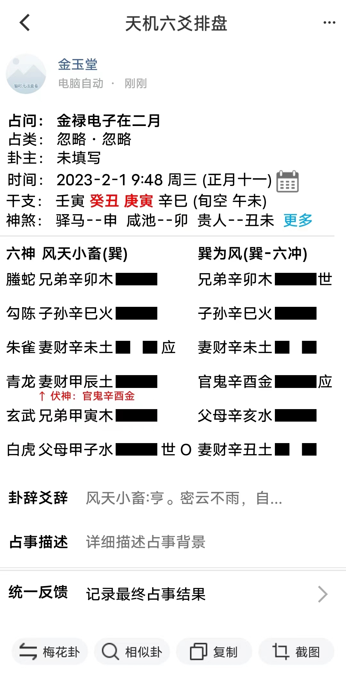
中原证券(601375) 近期走势 yyzxh888
公历起卦时间：2017年3月17日10时40分 (在线摇卦)
干支：丁酉年 癸卯月 癸卯日 丁巳时 （日空：辰巳）
巽宫：风天小畜 巽宫：巽为风 (六冲)
六神 伏神 本 卦 变 卦
白虎 兄弟辛卯木 ▅▅▅▅▅ 兄弟辛卯木 ▅▅▅▅▅ 世
腾蛇 子孙辛巳火 ▅▅▅▅▅ 子孙辛巳火 ▅▅▅▅▅
勾陈 妻财辛未土 ▅▅ ▅▅ 应 妻财辛未土 ▅▅ ▅▅
朱雀 官鬼辛酉金 妻财甲辰土 ▅▅▅▅▅ 官鬼辛酉金 ▅▅▅▅▅ 应
青龙 兄弟甲寅木 ▅▅▅▅▅ 父母辛亥水 ▅▅▅▅▅
玄武 父母甲子水 ▅▅▅▅▅ 世 ○→ 妻财辛丑土 ▅▅ ▅▅
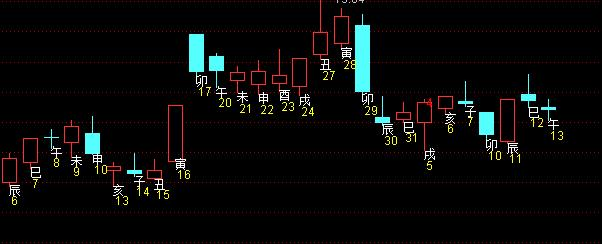
主帖标题: 期指IF1206于4四月17日走势
占事：IF1206.0417
公历时间：2012年4月16日14时32分
农历时间：壬辰年 三月 二十六日 未时
干 支：壬辰年 甲辰月 丁未日 丁未时
旬 空：午未 寅卯 (寅卯) 寅卯
巽宫：风天小畜 巽宫：巽为风（六冲）
六神 伏 神 【本 卦】 【变 卦】
青龙 ▄▄▄▄▄ 兄弟辛卯木 ▄▄▄▄▄ 兄弟辛卯木 世
玄武 ▄▄▄▄▄ 子孙辛巳火 ▄▄▄▄▄ 子孙辛巳火
白虎 ▄▄ ▄▄ 妻财辛未土 应 ▄▄ ▄▄ 妻财辛未土
螣蛇 官鬼辛酉金 ▄▄▄▄▄ 妻财甲辰土 ▄▄▄▄▄ 官鬼辛酉金 应
勾陈 ▄▄▄▄▄ 兄弟甲寅木 ▄▄▄▄▄ 父母辛亥水
朱雀 ▄▄▄▄▄ 父母甲子水 世O-> ▄▄ ▄▄ 妻财辛丑土
投机寅卯旬空，财旺于日月，世爻弱动化回头克合。
判断，当日低开，11点前震荡为主，11点后有个向下的大压动作。
下午丑土财受冲克合世爻主力，从而引发一波拉升行情，日线收阳。

主帖标题: 5月11-15日000532力合股份走势
以下是引用丙生子会在2009-5-10 15:05:00的发言：
方式：手工指定-----000532力合股份
公历：2009年5月8日14时26分 星期五 北京时间
干支：己丑年 己巳月 癸丑日 己未时
旬空：午未 戌亥 寅卯 子丑
神煞：驿马－亥 桃花－午 禄神－子 贵人－卯，巳
巳月 癸丑日 （旬空：寅卯）
巽：风天小畜 巽：巽为风(六冲)
六神 本 宫 【本 卦】 【变 卦】
白虎 兄弟卯木 ▅▅▅▅▅ 兄弟卯木 ▅▅▅▅▅ 兄弟卯木 世
螣蛇 子孙巳火 ▅▅▅▅▅ 子孙巳火 ▅▅▅▅▅ 子孙巳火
勾陈 妻财未土 ▅▅ ▅▅ 妻财未土 应 ▅▅ ▅▅ 妻财未土
朱雀 官鬼酉金 ▅▅▅▅▅ 妻财辰土 ▅▅▅▅▅ 官鬼酉金 应
青龙 父母亥水 ▅▅▅▅▅ 兄弟寅木 ▅▅▅▅▅ 父母亥水
玄武 妻财丑土 ▅▅▅▅▅ 父母子水 世○→ ▅▅ ▅▅ 妻财丑土
11日丙辰日跌；12日丁巳日涨；13日戊午日涨；14日己未日涨；15日庚申日跌；
丙生子会，你绝对是我老师。预测的真准。
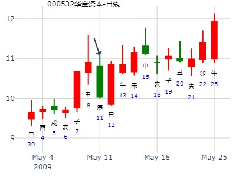
测000895双汇发展未来几个月的走势如何？
楼主：股市老马 时间：2011-05-07 22:07:00 点击：169 回复：7
公历起卦时间：2011年5月7日22时3分 (按
立夏：2011年05月06日05时20分
干支：辛卯年 癸巳月 壬戌日 辛亥时（日空：子丑）
巽宫：风天小畜 巽宫：巽为风 (六冲)
六神 伏神 本 卦 变 卦
白虎 兄弟辛卯木 ▅▅▅▅▅ 兄弟辛卯木 ▅▅▅▅▅ 世
腾蛇 子孙辛巳火 ▅▅▅▅▅ 子孙辛巳火 ▅▅▅▅▅
勾陈 妻财辛未土 ▅▅ ▅▅ 应 妻财辛未土 ▅▅ ▅▅
朱雀 官鬼辛酉金 妻财甲辰土 ▅▅▅▅▅ 官鬼辛酉金 ▅▅▅▅▅ 应
青龙 兄弟甲寅木 ▅▅▅▅▅ 父母辛亥水 ▅▅▅▅▅
玄武 父母甲子水 ▅▅▅▅▅ 世 ○→ 妻财辛丑土 ▅▅ ▅▅
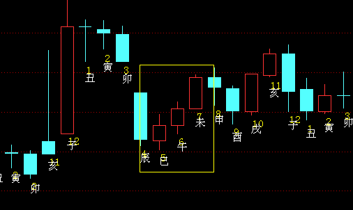
月线。
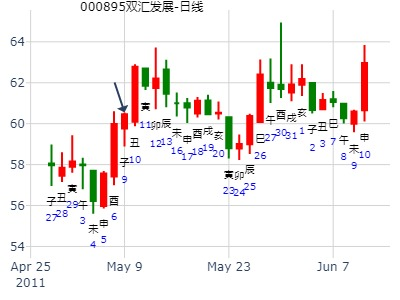
上证指数5月23-27日行情预测？
起卦时间：2011年05月22日19时46分起卦方式：电脑自动
干支：辛卯年 癸巳月 丁丑日 庚戌时
旬空：午未 午未 申酉 寅卯
六神 伏神 巽宫：风天小畜 巽宫：巽为风（六冲）
【本 卦】 【变 卦】
青龙 ▅▅▅▅▅ 兄弟辛卯木 ▅▅▅▅▅ 兄弟辛卯木 世
玄武 ▅▅▅▅▅ 子孙辛巳火 ▅▅▅▅▅ 子孙辛巳火
白虎 ▅▅ ▅▅ 妻财辛未土 应 ▅▅ ▅▅ 妻财辛未土
滕蛇 官鬼辛酉金 ▅▅▅▅▅ 妻财甲辰土 ▅▅▅▅▅ 官鬼辛酉金 应
勾陈 ▅▅▅▅▅ 兄弟甲寅木 ▅▅▅▅▅ 父母辛亥水
朱雀 ▅▅▅▅▅ 父母甲子水 世○→ ▅▅ ▅▅ 妻财辛丑土
《小畜》初九：复自道，何其咎，吉。《象》曰：“复自道”，其义“吉”也。
断：1、耗神子水持世，发动耗损用神，行情看跌。但喜耗神动化回头克合，耗损行动被抑制；且变爻为财，又刚好值日，说明行情不跌反涨，还会涨上天（日建在天）——大涨。
2、应爻未土为用神，值临白虎而暗动，亦说明行情将会有强势表现。
3、耗神在初爻动，又为阳爻持世，说明耗损财爻之行动发生在低位，其实就是震荡筑底与触底反弹之卦象。
4、新的一周依次为戊寅、己卯、庚辰、辛巳、壬午日。
5、综合判断：全周为反转向上、大涨行情。其中：周一、周二继续小幅震荡，周三日变盘向上，全周有望以光头阳线报收。
6、操作建议：周初震荡中，完全可以对回调之强势股票逢低进场。
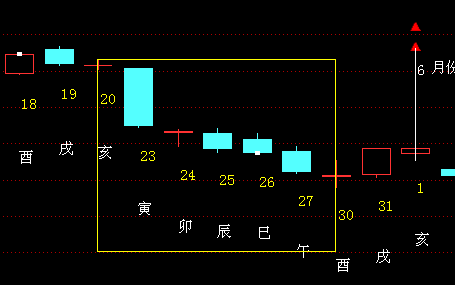
俗话说:“三个臭皮匠,合凑成一个诸葛亮”,那么,三个卦象,能不能合凑成一个诸葛亮呢？试试看:
注:以下都是时间卦 但取卦角度不同.
主题：沪指
壬寅 乙巳 乙丑 辛巳 (戌亥空) 壬寅年三月十二(2022/05/12 09:25:00)
风天小畜 巽为风
玄武 兄弟卯木 ／ 兄弟卯木 ／ 世
白虎 子孙巳火 ／ 子孙巳火 ／
腾蛇 妻财辛未 ∥ 应 妻财辛未 ∥
官鬼酉金：勾陈 妻财辰土 ／ 官鬼酉金 ／ 应
朱雀 兄弟甲寅 ／ 父母亥水 ／
青龙 父母子水 ○ 世 妻财丑土 ∥
主题：沪指
壬寅 乙巳 乙丑 辛巳 (戌亥空) 壬寅年三月十二(2022/05/12 09:25:00)
地雷复 地泽临
玄武 子孙酉金 ∥ 子孙酉金 ∥
白虎 妻财癸亥 ∥ 妻财癸亥 ∥ 应
腾蛇 兄弟丑土 ∥ 应 兄弟丑土 ∥
勾陈 兄弟辰土 ∥ 兄弟丑土 ∥
父母乙巳：朱雀 官鬼寅木 × 官鬼卯木 ／ 世
青龙 妻财子水 ／ 世 父母巳火 ／
主题：沪指
壬寅 乙巳 乙丑 辛巳 (戌亥空) 壬寅年三月十二(2022/05/12 09:25:00)
泽水困 天水讼
玄武 父母未土 × 父母戌土 ／
白虎 兄弟酉金 ／ 兄弟壬申 ／
腾蛇 子孙丁亥 ／ 应 官鬼午火 ／ 世
勾陈 官鬼午火 ∥ 官鬼午火 ∥
朱雀 父母辰土 ／ 父母辰土 ／
青龙 妻财寅木 ∥ 世 妻财寅木 ∥ 应
============================
主题：沪指
壬寅 乙巳 丙寅 癸巳 (戌亥空) 壬寅年三月十三(2022/05/13 09:25:00)
风火家人 风雷益
青龙 兄弟卯木 ／ 兄弟卯木 ／ 应
玄武 子孙巳火 ／ 应 子孙巳火 ／
白虎 妻财辛未 ∥ 妻财辛未 ∥
官鬼酉金：腾蛇 父母亥水 ○ 妻财辰土 ∥ 世
勾陈 妻财丑土 ∥ 世 兄弟寅木 ∥
朱雀 兄弟卯木 ／ 父母子水 ／
主题：沪指
壬寅 乙巳 丙寅 癸巳 (戌亥空) 壬寅年三月十三(2022/05/13 09:25:00)
地风升 地水师
青龙 官鬼酉金 ∥ 官鬼酉金 ∥ 应
玄武 父母癸亥 ∥ 父母癸亥 ∥
子孙庚午：白虎 妻财丑土 ∥ 世 妻财丑土 ∥
腾蛇 官鬼酉金 ○ 子孙午火 ∥ 世
兄弟寅木：勾陈 父母亥水 ／ 妻财辰土 ／
朱雀 妻财丑土 ∥ 应 兄弟寅木 ∥
主题：沪指
壬寅 乙巳 丙寅 癸巳 (戌亥空) 壬寅年三月十三(2022/05/13 09:25:00)
泽山咸 泽火革
青龙 父母未土 ∥ 应 父母未土 ∥
玄武 兄弟酉金 ／ 兄弟酉金 ／
白虎 子孙丁亥 ／ 子孙丁亥 ／ 世
腾蛇 兄弟申金 ／ 世 子孙亥水 ／
妻财卯木：勾陈 官鬼午火 ∥ 父母丑土 ∥
朱雀 父母辰土 × 妻财卯木 ／ 应
=====================
主题：沪指
壬寅 乙巳 己巳 己巳 (戌亥空) 壬寅年三月十六(2022/05/16 09:25:00)
风天小畜 风泽中孚
勾陈 兄弟卯木 ／ 兄弟卯木 ／
朱雀 子孙巳火 ／ 子孙巳火 ／
青龙 妻财辛未 ∥ 应 妻财辛未 ∥ 世
官鬼酉金：玄武 妻财辰土 ○ 妻财丑土 ∥
白虎 兄弟甲寅 ／ 兄弟卯木 ／
腾蛇 父母子水 ／ 世 子孙巳火 ／ 应
主题：沪指
壬寅 乙巳 己巳 己巳 (戌亥空) 壬寅年三月十六(2022/05/16 09:25:00)
坤为地 山地剥
勾陈 子孙酉金 × 世 官鬼寅木 ／
朱雀 妻财癸亥 ∥ 妻财子水 ∥ 世
青龙 兄弟丑土 ∥ 兄弟丙戌 ∥
玄武 官鬼卯木 ∥ 应 官鬼卯木 ∥
白虎 父母乙巳 ∥ 父母乙巳 ∥ 应
腾蛇 兄弟未土 ∥ 兄弟未土 ∥
主题：沪指
壬寅 乙巳 己巳 己巳 (戌亥空) 壬寅年三月十六(2022/05/16 09:25:00)
兑为泽 水泽节
勾陈 父母未土 ∥ 世 子孙子水 ∥
朱雀 兄弟酉金 ／ 父母戌土 ／
青龙 子孙丁亥 ○ 兄弟戊申 ∥ 应
玄武 父母丑土 ∥ 应 父母丑土 ∥
白虎 妻财卯木 ／ 妻财卯木 ／
腾蛇 官鬼巳火 ／ 官鬼巳火 ／ 世
主帖标题: 6月1日上证指数？创业板指数？
今天上证指数涨跌？ (手工指定)
干支：乙未年 辛巳月 戊申日 乙卯时 （日空：寅卯）
巽宫：风天小畜 巽宫：巽为风 (六冲)
六神 伏神 本 卦 变 卦
朱雀 兄弟辛卯木 ▅▅▅▅▅ 兄弟辛卯木 ▅▅▅▅▅ 世
青龙 子孙辛巳火 ▅▅▅▅▅ 子孙辛巳火 ▅▅▅▅▅
玄武 妻财辛未土 ▅▅ ▅▅ 应 妻财辛未土 ▅▅ ▅▅
白虎 官鬼辛酉金 妻财甲辰土 ▅▅▅▅▅ 官鬼辛酉金 ▅▅▅▅▅ 应
腾蛇 兄弟甲寅木 ▅▅▅▅▅ 父母辛亥水 ▅▅▅▅▅
勾陈 父母甲子水 ▅▅▅▅▅ 世 ○→ 妻财辛丑土 ▅▅ ▅▅

主帖标题: 3骰子卦2015：6.23--6.26，上证主力行为（如何买大盘，创业板）
公历起卦时间：2015年6月22日7时13分 (手工指定)
干支：乙未年 壬午月 己巳日 戊辰时 （日空：戌亥）
神煞：驿马－亥 桃花－午 日禄－午 贵人－子，申
巽宫：风天小畜 巽宫：巽为风 (六冲)
六神 伏神 本 卦 变 卦
勾陈 兄弟辛卯木 ▅▅▅▅▅ 兄弟辛卯木 ▅▅▅▅▅ 世
朱雀 子孙辛巳火 ▅▅▅▅▅ 子孙辛巳火 ▅▅▅▅▅
青龙 妻财辛未土 ▅▅ ▅▅ 应 妻财辛未土 ▅▅ ▅▅
玄武 官鬼辛酉金 妻财甲辰土 ▅▅▅▅▅ 官鬼辛酉金 ▅▅▅▅▅ 应
白虎 兄弟甲寅木 ▅▅▅▅▅ 父母辛亥水 ▅▅▅▅▅
腾蛇 父母甲子水 ▅▅▅▅▅ 世 ○→ 妻财辛丑土 ▅▅ ▅▅
反向指标又来了，或许不准，参考自负
[post]主力资金不作为，盘面震荡下跌再拉回部分[/post]
有不少的人经常讲老是预测大盘，你能买大盘吗？有什么意义？
其实。是可以买大盘的，而且没有停牌的风险！如何买？就是510310，159919
如何买创业板？就是159915
收益虽然不如个股高，但相对于风险来说，较小，没有停牌的风险。
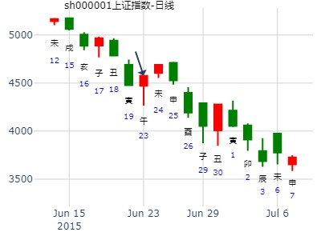
占问事宜：今日黄金走势1322
公历：2014年7月3日18时29分，星期四。
农历：甲午年 六月 初七日 酉时。
神煞：驿马-巳 桃花-子 干禄-卯 贵人-子、申
干支：甲午年 庚午月 乙亥日 乙酉时 (卦身：子)
华易算命网提供：http://www.k366.com 六爻排盘：http://cm.k366.com/pp/liuyao.asp
主变卦 风天小畜(巽宫) 之 巽为风(巽宫) [空亡:申、酉]
玄武 ▅▅▅▅▅ 兄弟辛卯木 ▅▅▅▅▅ 兄弟辛卯木 世
白虎 ▅▅▅▅▅ 子孙辛巳火 ▅▅▅▅▅ 子孙辛巳火
螣蛇 ▅▅ ▅▅ 妻财辛未土 应 ▅▅ ▅▅ 妻财辛未土
勾陈 官鬼辛酉金 ▅▅▅▅▅ 妻财甲辰土 ▅▅▅▅▅ 官鬼辛酉金 应
朱雀 ▅▅▅▅▅ 兄弟甲寅木 ▅▅▅▅▅ 父母辛亥水
青龙 ▅▅▅▅▅○父母甲子水 世 ▅▅ ▅▅ 妻财辛丑土
小畜之巽，个股一周。午日冲开合绊一路大涨。v2.md
时间: 2014-07-20 22时17分
干支: 甲午年辛未月壬辰日 (旬空: 午未 )
风天小畜 巽为风
六神 伏神 本 卦 变 卦
白虎 ▅▅▅▅▅ 兄弟卯木 ▅▅▅▅▅ 兄弟卯木 世
腾蛇 ▅▅▅▅▅ 子孙巳火 ▅▅▅▅▅ 子孙巳火
勾陈 ▅▅ ▅▅ 妻财未土 应 ▅▅ ▅▅ 妻财未土
朱雀 官鬼酉金▅▅▅▅▅ 妻财辰土 ▅▅▅▅▅ 官鬼酉金 应
青龙 ▅▅▅▅▅ 兄弟寅木 ▅▅▅▅▅ 父母亥水
玄武 ▅▅▅▅▅ 父母子水 世Ｏ→ ▅▅ ▅▅ 妻财丑土
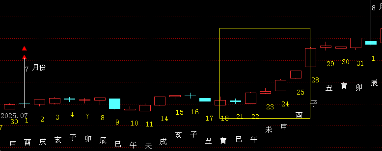
出生年：年 性别：男 占事: 测8.8上证收盘走势？8.6六
起卦方式：手动摇卦 周易天地www.64gua.com六爻线上排盘系统
公历时间：2011年8月6日6时34分 农历时间：辛卯年 七月初七日卯时
干支：辛卯年 乙未月 癸巳日 乙卯时
旬空：午未 辰巳 午未 子丑
神煞：驿马─亥 桃花─午 日禄─子 贵人─巳，卯
巽宫：风天小畜 巽宫：巽为风（六冲）
六神 伏 神 【本 卦】 【变 卦】
白虎 ▄▄▄▄▄ 兄弟辛卯木 ▄▄▄▄▄ 兄弟辛卯木 世
螣蛇 ▄▄▄▄▄ 子孙辛巳火 ▄▄▄▄▄ 子孙辛巳火
勾陈 ▄▄ ▄▄ 妻财辛未土 应 ▄▄ ▄▄ 妻财辛未土
朱雀 官鬼辛酉金 ▄▄▄▄▄ 妻财甲辰土 ▄▄▄▄▄ 官鬼辛酉金 应
青龙 ▄▄▄▄▄ 兄弟甲寅木 ▄▄▄▄▄ 父母辛亥水
玄武 ▄▄▄▄▄ 父母甲子水 世O-> ▄▄ ▄▄ 妻财辛丑土
《易经》第九卦 小畜 风天小畜 巽上乾下
小畜：亨。 密云不雨，自我西郊。彖曰：小畜； 柔得位，而上下应之，曰小畜。 健而巽，刚中而志行，乃亨。 密云不雨，尚往也。 自我西郊，施未行也。象曰：风行天上，小畜；君子以懿文德。
初九：复自道，何其咎，吉。
象曰：复自道，其义吉也。
九二：牵复，吉。
象曰：牵复在中，亦不自失也。
九三：舆说辐，夫妻反目。
象曰：夫妻反目，不能正室也。
六四：有孚，血去惕出，无咎。
象曰：有孚惕出，上合志也。
九五：有孚挛如，富以其邻。
象曰：有孚挛如，不独富也。
上九：既雨既处，尚德载，妇贞厉。 月几望，君子征凶。
象曰：既雨既处，德积载也。 君子征凶，有所疑也。

上证指数8月26-30日行情预测？[六爻预测][原创]再人
起卦时间：2013年08月26日07时00分 起卦方式：手摇硬币起卦
干支：癸巳年 庚申月 甲子日 戊辰时
旬空：午未 子丑 戌亥 戌亥
六神 伏神 巽宫：风天小畜 巽宫：巽为风（六冲）
【本 卦】 【变 卦】
玄武 ▅▅▅▅▅ 兄弟辛卯木 ▅▅▅▅▅ 兄弟辛卯木 世
白虎 ▅▅▅▅▅ 子孙辛巳火 ▅▅▅▅▅ 子孙辛巳火
滕蛇 ▅▅ ▅▅ 妻财辛未土 应 ▅▅ ▅▅ 妻财辛未土
勾陈 官鬼辛酉金 ▅▅▅▅▅ 妻财甲辰土 ▅▅▅▅▅ 官鬼辛酉金 应
朱雀 ▅▅▅▅▅ 兄弟甲寅木 ▅▅▅▅▅ 父母辛亥水
青龙 ▅▅▅▅▅ 父母甲子水 世○→ ▅▅ ▅▅ 妻财辛丑土
《小畜》初九：复自道，何其咎，吉。《象》曰：“复自道”，其义“吉”也。
断：1、耗神持世，旺相独动，行情看跌；但喜其动化财爻、动化回头合克，故行情不跌反涨。
2、卦名《小畜》，只有“小的阻滞”而已；变卦六冲，则行情起来时十分“突兀”。
3、父母持世、临青龙独动化回头合克，可能周内出新政，且还可能是“利空出尽”。
4、综合判断：全周看涨。
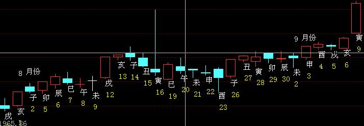
主帖标题: [原创]每日预测沪市大盘方向
公历起卦时间：2009年9月17日9时30分 (手工指定)
干支：己丑年 癸酉月 乙丑日 辛巳时 （日空：戌亥）
神煞：驿马－亥 桃花－午 日禄－卯 贵人－子，申
巽宫：风天小畜 巽宫：巽为风 (六冲)
六神 伏神 本 卦 变 卦
玄武 兄弟辛卯木 ▅▅▅▅▅ 兄弟辛卯木 ▅▅▅▅▅ 世
白虎 子孙辛巳火 ▅▅▅▅▅ 子孙辛巳火 ▅▅▅▅▅
腾蛇 妻财辛未土 ▅▅ ▅▅ 应 妻财辛未土 ▅▅ ▅▅
勾陈 官鬼辛酉金 妻财甲辰土 ▅▅▅▅▅ 官鬼辛酉金 ▅▅▅▅▅ 应
朱雀 兄弟甲寅木 ▅▅▅▅▅ 父母辛亥水 ▅▅▅▅▅
青龙 父母甲子水 ▅▅▅▅▅ 世 ○→ 妻财辛丑土 ▅▅ ▅▅
当天大涨。可是隔天兄弟值班直接跌。

占事：000751锌业股份下周涨跌
公历起卦时间：2014年9月5日16时53分 (电脑自动)
干支：甲午年 壬申月 己卯日 壬申时 （日空：申酉）
巽宫：风天小畜 巽宫：巽为风 (六冲)
六神 伏神 本 卦 变 卦
勾陈 兄弟辛卯木 ▅▅▅▅▅ 兄弟辛卯木 ▅▅▅▅▅ 世
朱雀 子孙辛巳火 ▅▅▅▅▅ 子孙辛巳火 ▅▅▅▅▅
青龙 妻财辛未土 ▅▅ ▅▅ 应 妻财辛未土 ▅▅ ▅▅
玄武 官鬼辛酉金 妻财甲辰土 ▅▅▅▅▅ 官鬼辛酉金 ▅▅▅▅▅ 应
白虎 兄弟甲寅木 ▅▅▅▅▅ 父母辛亥水 ▅▅▅▅▅
腾蛇 父母甲子水 ▅▅▅▅▅ 世 ○→ 妻财辛丑土 ▅▅ ▅▅
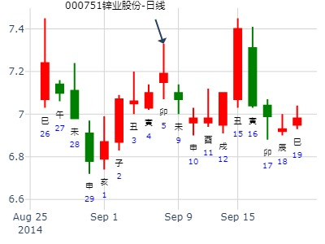
券商地产芯片高端装备哪个板块到春节涨得最好？
时间: 2024-09-27
干支: 甲辰年癸酉月甲午日 (旬空: 辰巳 )
风天小畜 巽为风
六神 伏神 本 卦 变 卦
玄武 ▅▅▅▅▅ 兄弟卯木 ▅▅▅▅▅ 兄弟卯木 世
白虎 ▅▅▅▅▅ 子孙巳火 ▅▅▅▅▅ 子孙巳火
腾蛇 ▅▅ ▅▅ 妻财未土 应 ▅▅ ▅▅ 妻财未土
勾陈 官鬼酉金▅▅▅▅▅ 妻财辰土 ▅▅▅▅▅ 官鬼酉金 应
朱雀 ▅▅▅▅▅ 兄弟寅木 ▅▅▅▅▅ 父母亥水
青龙 ▅▅▅▅▅ 父母子水 世Ｏ→ ▅▅ ▅▅ 妻财丑土
亨。 密云不雨，自我西郊。
初九：复自道，何其咎，吉。
券商。东方财富
占事：测我未来几年财运？卦主：甲丙红太阳
排卦：元亨利贞网六爻在线排盘系统
公历起卦时间：2011年10月22日23时2分 (电脑自动)
干支：辛卯年 戊戌月 辛亥日 戊子时 （日空：寅卯）
巽宫：风天小畜 巽宫：巽为风 (六冲)
腾蛇 兄弟辛卯木 ▅▅▅▅▅ 兄弟辛卯木 ▅▅▅▅▅ 世
勾陈 子孙辛巳火 ▅▅▅▅▅ 子孙辛巳火 ▅▅▅▅▅
朱雀 妻财辛未土 ▅▅ ▅▅ 应 妻财辛未土 ▅▅ ▅▅
青龙 官鬼辛酉金 妻财甲辰土 ▅▅▅▅▅ 官鬼辛酉金 ▅▅▅▅▅ 应
玄武 兄弟甲寅木 ▅▅▅▅▅ 父母辛亥水 ▅▅▅▅▅
白虎 父母甲子水 ▅▅▅▅▅ 世 ○→ 妻财辛丑土 ▅▅ ▅▅
这个卦信息足，好挂。
此卦看，卦中兄弟两现。2爻兄弟寅木，6爻兄弟卯木。我的确是这2年连续破财，不景气。
而父母持世，说明我赚钱很辛苦，临白虎化财，说明我想赚钱的愿望非常强烈
此卦父动化财回头合克，我本人于09年赚到人生的第一桶金，次年份财运大旺。
在看此卦财爻辰土月破，近期亦是不怎么太景气。子孙巳火日破，临勾陈，资金匮乏，手头没有太多的资金
明年开始我将转运，财辰土临太岁，且变爻丑土临太岁回头克父母子水有利，明年将赚钱。
接下来的巳年，子孙临太岁，亦是赚。午年，冲破父母，子孙旺，生财有利，继续赚。未年，财临太岁，继续赚。
终于快到了物极必反的时候了。 |
主帖标题: 梅花小孩：10月8日大盘的走势
父动化财，暗示大盘先跌后弹，收阳的趋势
主题：10月8日大盘的走势
己亥 甲戌 戊寅 庚申(申酉空) 己亥年九月初十(2019/10/08 16:25:42)
风天小畜 巽为风
朱雀 兄弟卯木 ／ 兄弟卯木 ／ 巽
青龙 子孙巳火 ／ 子孙巳火 ／
玄武 妻财未土 ∥ 应 妻财未土 ∥
官鬼酉金：白虎 妻财辰土 ／ 官鬼酉金 ／ 应
腾蛇 兄弟寅木 ／ 父母亥水 ／
勾陈 父母子水 ○ 巽 妻财丑土 ∥

2015年11月18日大盘。 小畜之巽。.md
公历时间：2015年11月17日15时15分---乐易
干 支：乙未年丁亥月丁酉日戊申时
旬 空：辰巳午未(辰巳)寅卯
巽宫：风天小畜 巽宫：巽为风（六冲）
六神 伏 神【本 卦】 【变 卦】
青龙 ▄▄▄▄▄ 兄弟辛卯木 ▄▄▄▄▄ 兄弟辛卯木 世
玄武 ▄▄▄▄▄ 子孙辛巳火 ▄▄▄▄▄ 子孙辛巳火
白虎 ▄▄ ▄▄ 妻财辛未土 应 ▄▄ ▄▄ 妻财辛未土
螣蛇 官鬼辛酉金 ▄▄▄▄▄ 妻财甲辰土 ▄▄▄▄▄ 官鬼辛酉金 应
勾陈 ▄▄▄▄▄ 兄弟甲寅木 ▄▄▄▄▄ 父母辛亥水
朱雀 ▄▄▄▄▄ 父母甲子水 世O-> ▄▄ ▄▄ 妻财辛丑土
初九：复自道，何其咎，吉。 象曰：复自道，其义吉也。

主题：600745闻泰科技下周的走势
己亥 乙亥 癸亥 丁巳 (日空:子丑 时空:子丑 )
(2019/11/22 10:02:57)
风天小畜 巽为风
白虎 兄弟乙卯 ／ 兄弟乙卯 ／ 巽
腾蛇 子孙丁巳 ／ 子孙丁巳 ／
勾陈 妻财己未 ∥ 应 妻财己未 ∥
官鬼辛酉：朱雀 妻财丙辰 ／ 官鬼辛酉 ／ 应
青龙 兄弟甲寅 ／ 父母癸亥 ／
玄武 父母壬子 ○ 巽 妻财癸丑 ∥
寅卯辰巳午
父动化回头克，先跌后弹的趋势 辰日转折
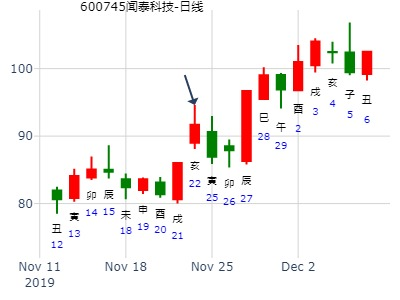
主帖标题: 11月23至11月27日大盘预测卦例收集
3、公历时间：2020年11月20日7时58分 农历时间：庚子年 十月初六日辰时
干 支：庚子年 丁亥月 丁卯日 甲辰时
旬 空：辰巳 午未 戌亥 寅卯
神 煞：驿马─巳 桃花─子 日禄─午 贵人─酉，亥
中国预测网纳甲六爻排盘
巽宫：风天小畜 巽宫：巽为风（六冲）
六神 伏 神 【本 卦】 【变 卦】
青龙 ▄▄▄▄▄ 兄弟辛卯木 ▄▄▄▄▄ 兄弟辛卯木 世
玄武 ▄▄▄▄▄ 子孙辛巳火 ▄▄▄▄▄ 子孙辛巳火
白虎 ▄▄ ▄▄ 妻财辛未土 应 ▄▄ ▄▄ 妻财辛未土
螣蛇 官鬼辛酉金 ▄▄▄▄▄ 妻财甲辰土 ▄▄▄▄▄ 官鬼辛酉金 应
勾陈 ▄▄▄▄▄ 兄弟甲寅木 ▄▄▄▄▄ 父母辛亥水
朱雀 ▄▄▄▄▄ 父母甲子水 世○ ▄▄ ▄▄ 妻财辛丑土

乙卯(775979469) 08:42:51
上海大盘升跌12.22-26
2014年12月22日8时33分
干 支：甲午年 丙子月 丁卯日 甲辰时
旬 空：辰巳 申酉 戌亥 寅卯
巽宫：风天小畜 巽宫：巽为风（六冲）
青龙 ▄▄▄▄▄ 兄弟辛卯木 ▄▄▄▄▄ 兄弟辛卯木 世
玄武 ▄▄▄▄▄ 子孙辛巳火 ▄▄▄▄▄ 子孙辛巳火
白虎 ▄▄ ▄▄ 妻财辛未土 应 ▄▄ ▄▄ 妻财辛未土
螣蛇 官鬼辛酉金 ▄▄▄▄▄ 妻财甲辰土 ▄▄▄▄▄ 官鬼辛酉金 应
勾陈 ▄▄▄▄▄ 兄弟甲寅木 ▄▄▄▄▄ 父母辛亥水
朱雀 ▄▄▄▄▄ 父母甲子水 世○ ▄▄ ▄▄ 妻财辛丑土
乙卯(775979469) 08:43:24
一二三升
秋水盈盈ゞ(714492500) 08:45:16
Q51B.gif)
中道至简(1005838097) 08:45:59
二涨三涨，今天不好说
九戒(1677530412) 08:47:09
跌倒周四开始涨
风生水起(594429828) 08:47:19

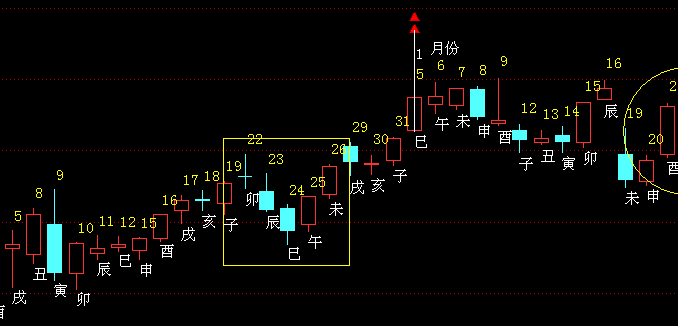
主帖标题: 泰达股份今天18日涨跌
你看看这个：
公历：2019年12月18日8时5分，星期三。
干支：己亥年 丙子月 己丑日 戊辰时 (卦身：子)
主变卦 风天小畜(巽宫) 之 巽为风(巽宫) [空亡:午、未]
勾陈 ▅▅▅▅▅ 兄弟辛卯木 ▅▅▅▅▅ 兄弟辛卯木 世
朱雀 ▅▅▅▅▅ 子孙辛巳火 ▅▅▅▅▅ 子孙辛巳火
青龙 ▅▅ ▅▅ 妻财辛未土 应 ▅▅ ▅▅ 妻财辛未土
玄武 官鬼辛酉金 ▅▅▅▅▅ 妻财甲辰土 ▅▅▅▅▅ 官鬼辛酉金 应
白虎 ▅▅▅▅▅ 兄弟甲寅木 ▅▅▅▅▅ 父母辛亥水
螣蛇 ▅▅▅▅▅○父母甲子水 世 ▅▅ ▅▅ 妻财辛丑土